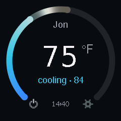
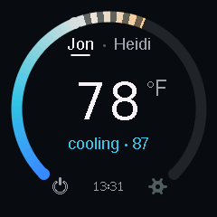
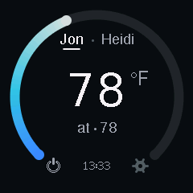
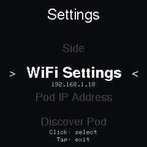
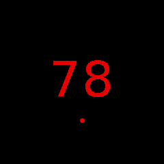
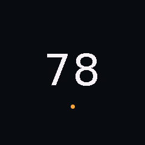

01
Turn toward comfort
Solid fill is where the mattress is. The span beyond it pulses toward the number you chose and shrinks as the bed catches up.
A bedside knob that shows where your mattress is, where it is going, and lets you turn it, click it off, and leave it alone. Every frame on this page was captured from the device.
Solid fill is where the mattress is. The span beyond it pulses toward the number you chose and shrinks as the bed catches up.

Cooling reads the same way: the target sits at the cap, the pulsing span is the distance still to travel.

At the target the loader disappears. Just your side, your number, the time.

Click the dial, or tap the power glyph. The arc empties and the number dims. A click brings it back at the last setpoint.

Hold the dial or the screen. A ring fills around the rim; let go early and nothing happens.

Pick Left or Right once in Settings. Nothing on the main screen switches it by accident.

Between 10 pm and 7 am the whole interface shifts to red on black at 20% brightness. No sounds at all.

After five seconds it dims to 1%. Only the number and one status dot survive, by design.

The first touch after a dim only wakes the screen. A bump in the dark never moves your temperature.
Each detent moves the target one degree, two when you spin. The arc settles 180 ms after you stop.
The span between the mattress and the target pulses gently until the bed arrives.
One click empties the arc. One more brings it back at the last setpoint.
The ring fills over a second and a half, then settings opens. Let go early and nothing happens.
| You do | It does |
|---|---|
| Turn | Moves the target. 1° per detent, 2° when you spin. Two detents below 55° reach an off stop. |
| Click, or tap ⏻ | Turns your side off, or back on at the last setpoint. |
| Hold, or tap ⚙ | Opens settings after a ring fills. Release early and nothing happens. |
| Settings › Side | Picks Left or Right once. It is remembered and never changes by accident. |
| Touch while dim | Only wakes the screen. The next turn counts. |
Talks to sleepypod-core on your network. Finds the Pod by mDNS. No cloud, no account.
A hollow cap means the Pod has not confirmed yet. "Pod offline" and "No Wi-Fi" say so in words.
The side name comes from the Pod's settings, so the dial says Jon, not L.
The Pod's own state never overwrites a number you touched in the last 30 seconds.